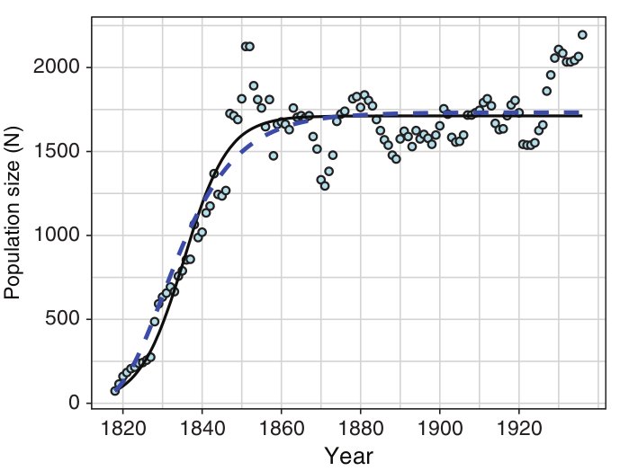
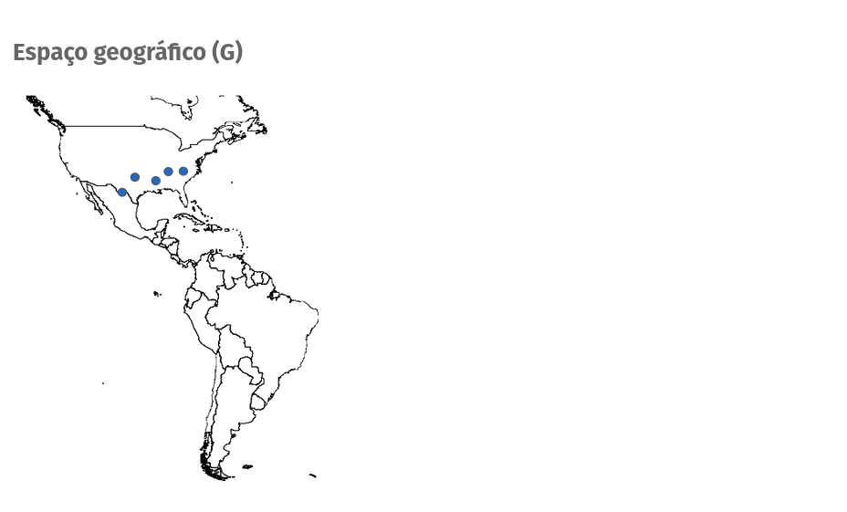
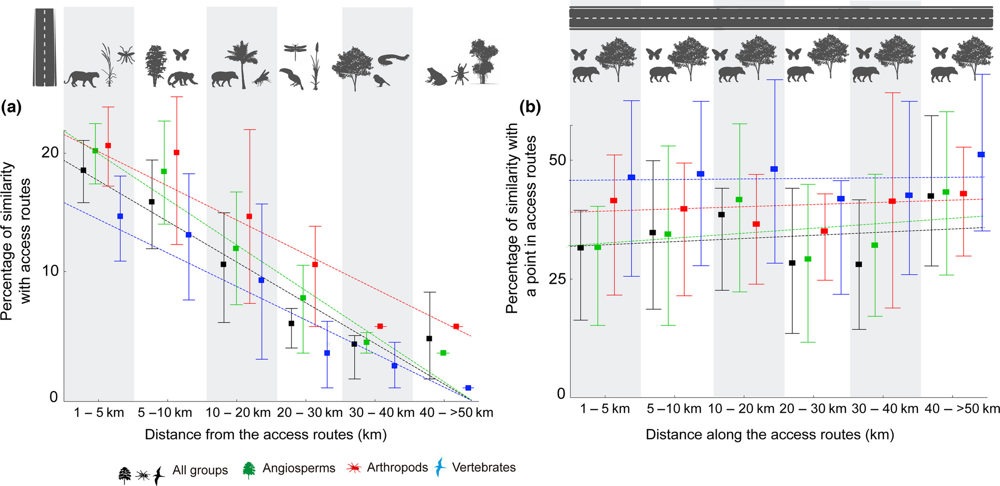
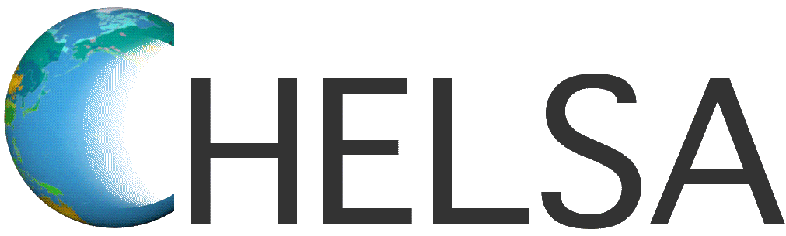
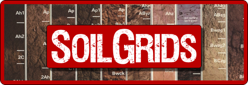
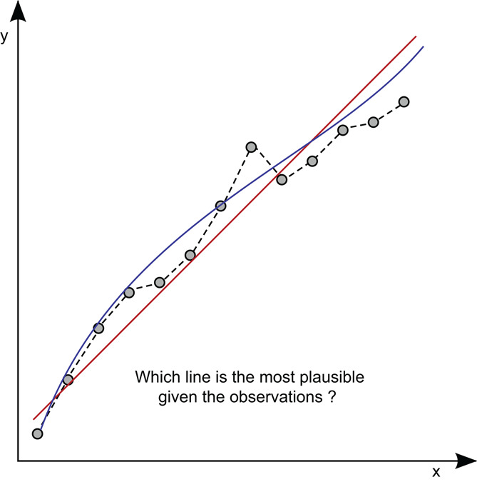
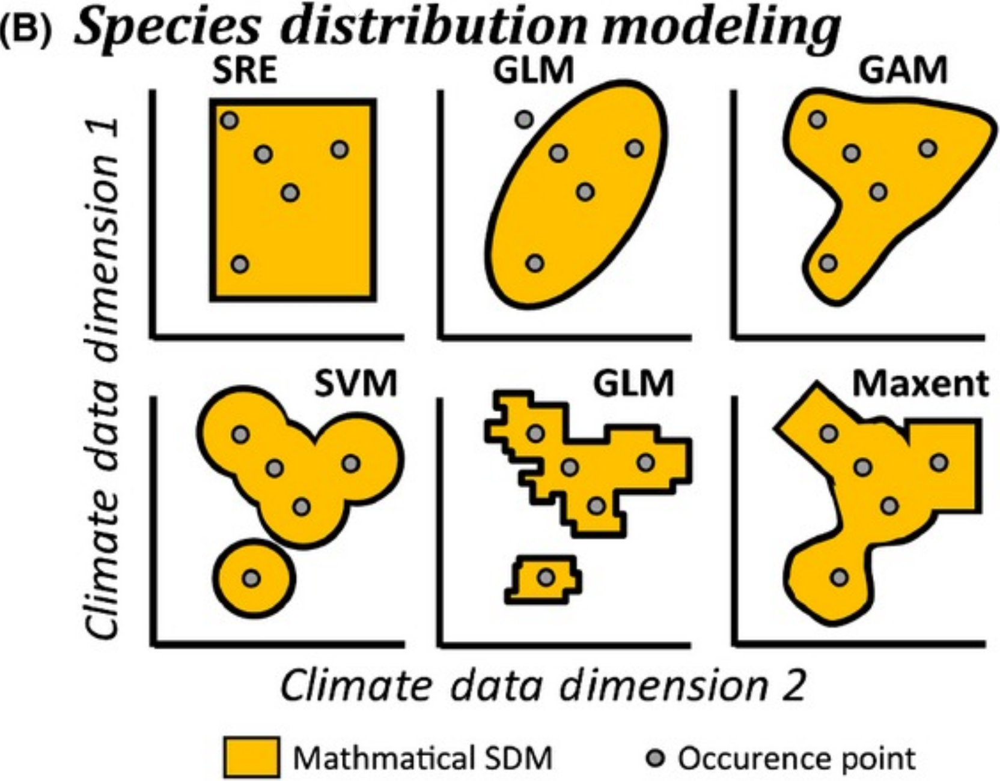

Em comum: todos são modelos. Mas o que são modelos?
Modelos [científicos]
Idealizações da realidade e não a própria realidade
(…) essentially, all models are wrong, but some are useful. George E. P. Box (1919-2013)
Objetivo
Predizer a distribuição de espécies (ou entidades) a partir do nicho ecológico
Entretanto…
Estimar/analisar o nicho das espécies sem inferir sua distribuição geográfica
- Sobreposição de nicho
- Amplitude do nicho
- Montagem de comunidades
- Respostas ambientais
- Diversidade funcional
- …
Entretanto…
Inferir a distribuição das espécies sem estimar o nicho ecológico
- Buffers
- Densidade de Kernel
- Mínimo Polígono Convexo (MPC)
- Interpolações (IDW, Spline, Krigagem)
- Opinião de especialistas (IUCN)
- …
Nicho ecológico
- Modelagem de nicho ecológico
- Coexistência entre espécies
- Metacomunidades
Modelagem de nicho ecológico
Combinações de condições que permitem a uma população sobreviver e crescer (r >= 0) em um determinado lugar

Modelagem de nicho ecológico
- Podemos associar a taxa de crescimento intrínseca (r) com as condições favoráveis
- O modelo então estima as condições favoráveis (nicho ecológico) no Espaço Ambiental (E) e prediz a distribuição da espécie Espaço Geográfico (G)
Condições abióticas (A) e bióticas (B)
Nicho fundamental
Todas as condições ambientais favoráveis

Nicho realizado
Condições ambientais favoráveis limitadas pela interação
Nicho
Hipervolume n-dimensional
Dualidade Hutchinsoniana
Inferir a distribuição geográfica de uma espécie a partir do nicho ecológico
Ocorrências no espaço geográfico

Condições ambientais

Estimativa do nicho realizado

Predição geográfica

Ocorrências
Formato

Ocorrências
Fontes
- Coletas em campo (amostragens em campo)
- Literatura (artigos, data papers, …)
- Ciência cidadã (e-Bird, iNaturalist, …)
- Coleções científicas e museus (Museu Nacional, …)
- Banco de dados (GBIF, SpeciesLink, …)

Ocorrências
Bancos de dados

Ocorrências
Pacotes no R

Ocorrências
Viés de amostragem - Brasil
- 1.144.629 (total) e 882.468 (válidos) ocorrências para 4345 espécies
- Grupos: vertebrados , artropodes e angiospermas
- Todos as ocorrências < 1km de rotas de acesso (estradas e rios)

Ocorrências
Viés de amostragem - Mundo
- 742 milhões de ocorrências de 374.900 espécies
- Representando 6,74% do globo amostrado

Variáveis ambientais
Raster - contínuos ou categóricos


Variáveis ambientais
Bases de dados
 
Variáveis ambientais
Interpolação

Variáveis ambientais
| BIO01 |
Temperatura |
Temp. média anual |
| BIO02 |
Temperatura |
Variação diurna média da temp. |
| BIO03 |
Temperatura |
Isotermalidade |
| BIO04 |
Temperatura |
Sazonalidade da temp. |
| BIO05 |
Temperatura |
Temp. máx. do mês mais quente |
| BIO06 |
Temperatura |
Temp. mín. do mês mais frio |
| BIO07 |
Temperatura |
Amplitude térmica anual |
| BIO08 |
Temperatura |
Temp. média do trim. mais úmido |
| BIO09 |
Temperatura |
Temp. média do trim. mais seco |
| BIO10 |
Temperatura |
Temp. média do trim. mais quente |
| BIO11 |
Temperatura |
Temp. média do trim. mais frio |
Bioclimáticas
- Temp. = Temperatura
- Prec. = Precipitação
- trim. = Trimestre
Variáveis ambientais
| BIO12 |
Precipitação |
Prec. anual |
| BIO13 |
Precipitação |
Prec. do mês mais chuvoso |
| BIO14 |
Precipitação |
Prec. do mês mais seco |
| BIO15 |
Precipitação |
Sazonalidade da prec. |
| BIO16 |
Precipitação |
Prec. do trim. mais chuvoso |
| BIO17 |
Precipitação |
Prec. do trim. mais seco |
| BIO18 |
Precipitação |
Prec. do trim. mais quente |
| BIO19 |
Precipitação |
Prec. do trim. mais frio |
Bioclimáticas
- Temp. = Temperatura
- Prec. = Precipitação
- trim. = Trimestre
Variáveis ambientais
Princípio da Parcimônia
- William of Ockham’s (1285–1348)
- “É fútil fazer com mais o que pode ser feito com menos”

Variáveis ambientais
Colinearidade - Correlação
- Mede o grau de relação (positiva ou negativa) entre duas variáveis
- r > |0.7|: indica alta correlação

Variáveis ambientais
Colinearidade - Fator de Inflação de Variância (VIF)
- Medida da quantidade de multicolinearidade em um conjunto de múltiplas variáveis
- VIF = 1: não há multicolinearidade entre as variáveis
- VIF > 2 ou VIF > 5 ou VIF > 10: indica alta multicolinearidade (depende do autor)
- Na figura: a) r = 0.8946 e VIF = 5.007 e b) r = 0.7697 e VIF = 2.453

Visão geral

Visão geral
Protocolo padrão para modelos de distribuição de espécies
Métodos ou algoritmos
Métodos modelam diferentes áreas do Diagrama BAM

Métodos ou algoritmos
Depende dos dados de presença e ausência da espécie

Ausências em Ecologia
- Zeros falsos: experiência do observador (a – b) ou desenho experimental (c – h)
- Zeros verdadeiros: sistema ecológico estudado - zeros estruturais (i – k) ou variabilidade da amostragem - zeros aleatórios (l)

Métodos ou algoritmos
Depende dos dados de presença e ausência da espécie
Somente presença
Bioclim (Envelope score)
Envelope climático com escores
Somente presença
Domain (Distântica de Gower)
Distância ponto a ponto

Somente presença
Mahalanobis (Distância de Mahalanobis)
Envelope elíptico reflete melhor a tendência central da teoria do nicho
Presença e pseudopresença
GLM (Modelos Lineares Generalizados - Generalized Linear Models)
- Distribuição de erros binomial

Presença e pseudopresença
GAM (Modelos Generalizados Aditivos - Generalized Additive Model)
- Distribuição de erros binomial com funções de suavização
Presença e pseudopresença
Random Forest
- Cria diversas árvores de decisão (‘floresta’) por reamostragem (bootstrap)
- Combina os resultados de cada árvore em uma última classificação (categórico) ou regressão (contínuo)
Presença e pseudopresença
SVM (Support Vector Machine)
- Cria hiperplanos através de vetores de suporte
- Faz a classificação (categórico) ou regressão (contínuo) para separar os dados em duas ou mais partes
Presença e background
MaxEnt (Máxima Entropia)
- Compreender as características gerais de um sistema de informação parcial e incompleto
- Aproxima o formato da distribuição dos valores do background aos valores das presenças, usando diferentes curvas (features) para achar os valores de adequabilidade
Outros métodos ou algoritmos
Presença-pseudoausência
- Classification and regression trees (CART)
- Multivariate adaptive regression spline (MARS)
- Mixture discriminant analysis (MAD)
- Artificial neural networks (ANN)
- Boosted Regression Trees (BRT)
- Bayesian Gaussian Process (GAU)
Presença-background
- Ecological Niche Factor Analysis (ENFA)
- Genetic Algorithm for Rule-set Production (GARP)
- Maxlike (MLK)
Métodos ou algoritmos
Tunando hiperparâmetros (Hyperparameter tuning)
Métodos ou algoritmos
Tunando hiperparâmetros (Hyperparameter tuning)
Métodos ou algoritmos
Pacotes no R

Visão geral
Visão geral
Protocolo padrão para modelos de distribuição de espécies
4. Avaliação (do ajuste) dos modelos
Avaliação
Partição dos dados (treino e teste)
Avaliação
O modelo consegue prever nossos dados?
Avaliação
O modelo consegue prever nossos dados?

Avaliação
Métricas de avaliação
- Sensibilidade: proporção de presenças verdadeiras [0:1]
- Especificidade: proporção de ausências verdadeiras [0:1]
- AUC: probabilidade de classificação correta [0:1]
- Kappa: medida de concordância da classificação [-1:1]
- TSS: compara o número de classificações corretas, menos aquelas atribuídas aleatoriamente [-1:1]
Avaliação
AUC (Área Abaixo da Curva - Area Under the Curve)
Avaliação
\(K = \frac{\frac{a+d}{N}-\frac{(a+b)(a+c)+(c+d)(b+d)}{N^2}}{1-\frac{(a+b)(a+c)+(c+d)(d+b)}{N^2}} = \frac{P_o - P_e}{1 - P_e}\), onde P = acurácia
K > 0.75: Excelente
0.40 > K > 0.75: Bom
K < 0.40: pobre
- TSS (True Skill Statistic) [-1 a +1]
\(TSS = \frac{ad-bc}{(a+c)(b+d)} = Sensitividade + Especificidade - 1\)
TSS ≅ +1: concordância perfeita
TSS <= 0: desempenho não melhor do que aleatório
Indicativos: TSS > 0.5, TSS > 0.7, TSS > 0.8 e TSS > 0.9
Visão geral
Visão geral
Protocolo padrão para modelos de distribuição de espécies
5. Predição no espaço e no tempo
Predição
Estimar a distribuição para onde não temos dados
Predição
Diferentes estimativas do nicho geram diferentes predições geográficas
Predição
Consenso (ensemble)
- Frequência
- Média
- Média ponderada (AUC ou TSS)
Consenso (ensemble)
Frequência: contabilizar pixels previstos como presença
- Uso de um limiar de corte para binarizar os modelos [0 e 1]
- Soma da quantidade de pixels e divisão pelo total de modelos [0 a 1]
\[ consenso = \sum_{i=1}^{N} (pixel_i \geq limiar_j) \]
Consenso (ensemble)
Média: calcular a média dos valores de adequabilidade para cada pixel
- Padronização dos valores de adequabilidade [0 a 1]
- Cálculo da média aritmética de cada pixel
\[ consenso = \frac{1}{N}\sum_{i=1}^{N} (pixel_i) \]
Consenso (ensemble)
Média ponderada: calcular a média ponderada dos valores de adeq.
- Padronização dos valores de adequabilidade [0 a 1]
- Cálculo da média ponderada pelos valores de AUC ou TSS de cada pixel
\[consenso = \frac{\sum_{i=1}^{N}(w_i . pixel_i)}{\sum_{i=1}^N(w_i)}\]
Consenso (ensemble)
Incertezas: calcular um valor de incerteza para cada pixel
- Padronização dos valores de adequabilidade [0 a 1]
- Cálculo do desvio padrão ou partição da variância de cada pixel
\[ desvio = \sqrt{\frac{1}{N}\sum_{i=1}^{N} (pixel_i - \overline{pixel_i})^2} \]
Consenso (ensemble)
Incertezas: calcular um valor de incerteza para cada pixel
- Padronização dos valores de adequabilidade [0 a 1]
- Cálculo do desvio padrão ou partição da variância de cada pixel